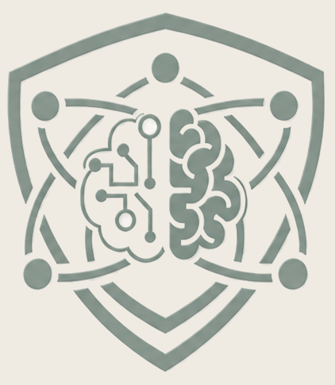

Self-paced · 8 modules · approx. 15–20 min each
AI-Epistemic Resilience
How to think clearly, verify well, and stay in control of your own judgment in a world where machines generate information at scale.
Generative AI can produce fluent, confident answers in seconds. Sometimes those answers are wrong, misleading, or entirely fabricated, and the polish is exactly what makes the errors hard to catch. This course builds the habits that keep your thinking steady in that environment. It is not about rejecting AI, and not about trusting it. It is about knowing when and how to verify.
The skills here are not specific to any one field. They matter anywhere people rely on AI-generated information to make decisions that carry weight.

What you will learn
The course is built on a single framework: four interdependent regulatory elements that work together as a dynamic system rather than a checklist. You will learn to recognize them, practice them, and apply them across education, professional, and civic settings.
Course contents
- MODULE 1Introduction to AI-Epistemic ResilienceWhat AI-ER is, the fluency–fidelity gap, and the four regulatory elements as a system.
- MODULE 2The Epistemic TraditionsThe roots AI-ER draws on: epistemic vigilance, resilience, critical thinking, digital literacy.
- MODULE 3The AI-ER FrameworkThe four elements in depth and their reciprocal interactions, anchored by the loop diagram.
- MODULE 4Applying AI-ER in EducationClassroom and seminar practice.
- MODULE 5Applying AI-ER in IndustryWorkplace and clinical decision contexts.
- MODULE 6Applying AI-ER in Civic LifeMisinformation, deepfakes, and community response.
- MODULE 7Building Resilient HabitsRoutines and design patterns that make the elements consistent.
- MODULE 8The Future of AI-ERThe horizon of unverifiability, the AI dismissal fallacy, and the research agenda.
How the course works
Each module includes a short reading, a reflective activity, and a knowledge check. Move through them at your own pace using the navigation at the bottom of each page. Reflective activities are for your own thinking and are not graded. A final assessment and completion certificate will be added once the modules are complete.